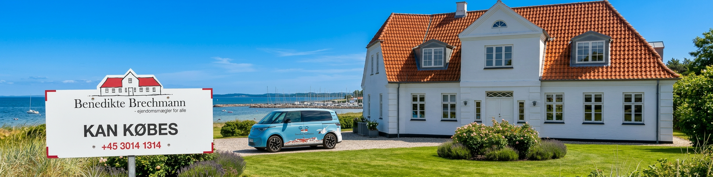

Valg af bolig
Køberrådgiveren kan hjælpe dig i den opstartende købsprocess, med at finde relevante og spændende boliger for dig med fokus på dine krav, ønsker og prioriteringer.

Køberrådgiveren kan hjælpe dig i den opstartende købsprocess, med at finde relevante og spændende boliger for dig med fokus på dine krav, ønsker og prioriteringer.

Køberrådgiveren kan gennemgå de tit forvirrende salgsopstillinger, tilstandsrapporter, energimærker og lokalplaner. Så du føler dig sikker og tryg med viden om at du ikke har overset noget indhold som kan have konsekvenser for din boligsitation.

Køberrådgiveren kan hjælpe dig igennem prisforhandlingerne og sikre dig en ordentlig pris med fokus på dække eventuelle mangler i din fremtidig bolig som renoveringsbehov. Eller hjælp til prisforhandling så du kan opnå din drømmebolig.

Køberrådgiveren tager altid dine rettigheder som boligkøber hele vejen igennem købsprocessen. Det sikre at du bliver rådgivet om indholdet og konsekvenserne ved en købsaftale.

Køberrådgiveren hjælper dig med overdragelsen af skødet og rådgivningen til finansiering. Du får sikkerhed og rådgivning til skødets basale oplysninger så du aldrig står alene i den endelige del af din købsprocess af drømmeboligen.
Det kan blive dyrt både for miljøet og for dig. Hvis du står over for et huskøb, så bør det tænde en advarselslampe, hvis der dukker dokumenter op om en nedgravet olietank på grunden.
En ejerskifteforsikring dækker skader, der er opstået inden du overtager huset. Forsikringen omfatter de bygninger, der er nævnt i tilstandsrapporten og/eller el-installationsrapporten. Du er blandt andet dækket mod: Ulovlige el-installationer Ulovlige VVS-installationer Udgifter til reparation af skjulte skader, som ikke er omtalt i tilstands- eller el-eftersynsrapporten
Ønsker ny drømmebolig. Få overblik og hvad har jeg råd til? Deltag i åbent hus. “Vi har fundet drømmeboligen” Tjek boligens stand Husk Advokatforbehold. Overblik over dokumenter Finansiering Handel godkendes Fortrydelsesretten Køb af drømmeboligen Tinglysning Nøglerne er dine! Refusionsopgørelse TILLYKKE MED DIN NYE DRØMMEBOLIG!
Når du køber et hus, er hårde hvidevarer faktisk et af de steder, hvor mange bliver overraskede bagefter. Her får du en klar, konkret liste over alt det, du skal være opmærksom på. Som udgangspunkt følger fastmonterede hvidevarer med, fx: Indbygget ovn Induktions-/keramisk kogeplade Emhætte Opvaskemaskine (hvis den er fastmonteret) Indbygget køleskab/fryser Men: Løse hvidevarer (fx fritstående køleskab, vaskemaskine, tørretumbler) følger kun med, hvis det står i købsaftalen. Du må gerne teste hvidevarerne ved fremvisning: Tænd ovnen Start opvaskemaskinen Tjek køleskabets temperatur Lyt efter mislyde Tjek om gummilister er slidte Hvis du ikke kan teste dem, så bed om en funktionsattest i købsaftalen.
Ja - vi er helt uafhængige. Det betyder, at vi ikke er en del af en mæglerkæde og ikke er bundet af samarbejdsaftaler med bestemte banker eller realkreditinstitutter. Derfor kan vi tilbyde dig ærlig, personlig og uvildig rådgivning - uden skjulte dagsordener. Samtidig betyder vores lave omkostninger, at vi kan tilbyde en skarpere pris end mange andre. Vi er fri som fuglen.
Ja - Vi tilbyder altid prisgaranti! Får du et skriftligt tilbud fra en anden køberrådgiver eller advokat, så matcher vi ikke kun prisen - vi trækker yderligere 10 % fra. Det er din garanti for, at du ikke betaler for meget - og stadig får nærværende rådgivning.
"Siden 2022 har jeg drevet min egen ejendomsmæglerforretning, og jeg elsker det! Jeg arbejder fra mit hjem i Bregnør og hjælper købere trygt og menneskeligt gennem deres boligkøbsprocess. Jeg har været i branchen siden 2016 og er uddannet hos Thobo-Carlsen & Partnere i Odense. Erfaringen tager jeg med mig men jeg gør tingene på min egen måde! For jeg er Benedikte Brechmann.”
Priser/pakker